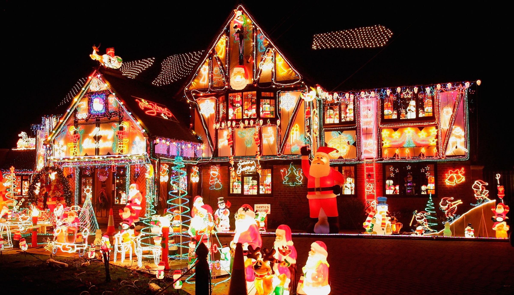
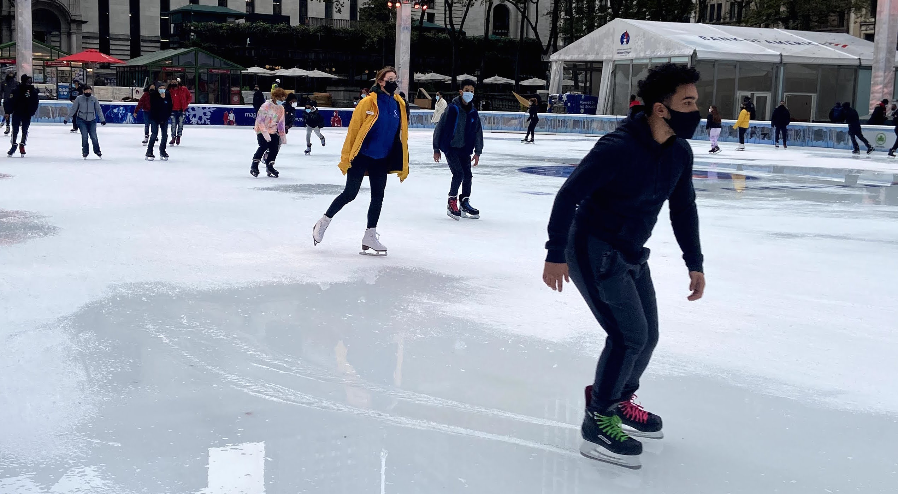

Theres nothing like watching your favorite christmas movie with friends and family next to a nice fireplace with a sugar cookie.
3) Explore your Neighborhoods Decorations:

Ride around your Neighborhood looking at all the lights setup on each and every house! Get inspiration for your own house or just enjoy the ride. I would recommend bring a nice warm jug of cocoa as well!
2) Chop Down and Decorate:
Chopping down your own Christmas tree is a great way to get into the holiday spirit and theres nothing like going and picking your very own tree out! Farms often have little shops with decorations you can purchase, santa, and even free hot cocoa!
1) Go Ice Skating

If you want to do something physical this is the perfect option! Although ice skating can seem intimidating and hard at first it can be pretty easy to get the hang of. Ice skating is a great outdoor or indoor activity although this could be on the pricier side depending on how many people go. Dress warm!
Another Website Filled With Ideas:
Click Here!